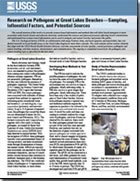
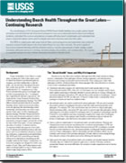
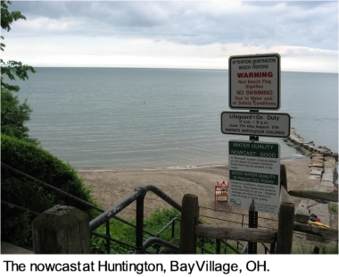
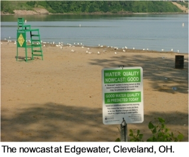
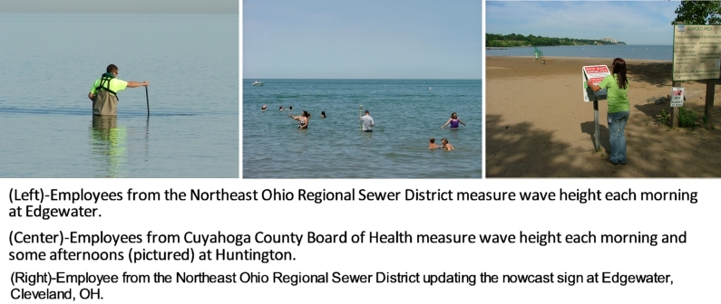
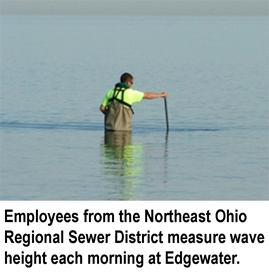
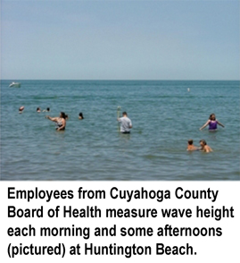
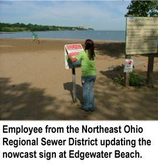
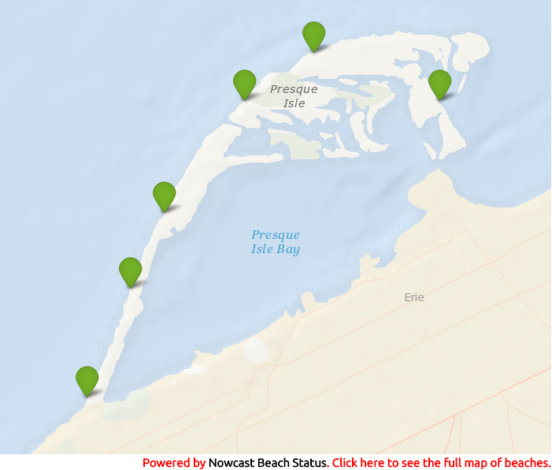

Welcome to the NowCast -- A daily nowcast of recreational water quality conditions
Is it safe to swim in the lake or canoe in the river? To find out, local agencies monitor the water daily to determine concentrations of fecal indicator bacteria (FIB), such as Escherichia coli (E. coli), found in sewage and other animal wastes. But because results of FIB levels take 18-24 hours by conventional methods, we are using other quickly-obtained measurements to estimate when FIB levels will be high. This is called a “nowcast.”
Why do we need the NowCast?
States use standards for FIB (fecal indicator bacteria) to assess whether the water quality is acceptable for swimming or other recreational activities. FIB, such as E. coli, are not usually disease causing but are found in the gastrointestinal tract of healthy warm-blooded animals, including humans, and their feces. The presence of FIB is an indicator that disease-causing organisms are also likely to be present.
For Great Lakes swimming areas, if the level of E. coli goes over the recreational water quality standard, the manager at the swimming area will take action based on the State regulations. E. coli concentrations are measured in most probable number per 100 mL (MPN/100mL) or colony-forming units per 100 milliliters (CFU/100mL), depending on the analytical method used. A milliliter is a unit of volume in the metric system; 100 milliliters is equivalent to just under ½ cup. The table below summarizes the recreational water quality standards (as used for the NowCast) for states with participating NowCast beaches.
| State |
Recreational Water Quality Standard,
in E. coli per 100 millilters |
|---|---|
| Michigan | 300 |
| New York | 235 |
| Ohio | 235 |
| Pennsylvania | 235 |
What is commonly done to monitor recreational water quality is to collect a water sample from the swimming area or stream, transport the sample to a laboratory, and determine numbers of FIB in the sample. The problem is that it takes at least 18 hours to grow FIB in the laboratory. Unfortunately, by the time FIB results are compiled, water-quality conditions may have already changed. By contrast, it takes less than an hour to estimate recreational water quality using the predictive model and transmit results through the NowCast.
Any use of trade, firm, or product names is for descriptive purposes only and does not imply endorsement by the U.S. Government.
How does the NowCast work?
A nowcast estimates current conditions similar to how a weather “forecast” looks to the future.
The NowCast is a mathematical system that uses easily measured environmental and water-quality “variables,” such as turbidity and rainfall, to estimate levels of FIB (fecal indicator bacteria). Mathematical models are developed from several years of measurements taken at a particular site, and all models used in the NowCast are swimming area or site specific.
The NowCast for swimming areas provides the probability (in percent) that the established state recreational water quality standard will be exceeded. So on any given morning, there could be from a 1- to 100- percent probability that the standard would be exceeded. How does one know when the probability presents too great a risk to go swimming? Would you go swimming if there was an 80-percent probability that the standard would be exceeded? What about a 25 percent chance? To help out, managers at swimming areas establish a site-specific threshold probability based on historical data.
The NowCast for the Cuyahoga River at Jaite provides a predicted E. coli concentration. Daily information on whether the predicted concentration exceeds or does not exceed 235 E. coli per 100 mL will be posted online. For the Cuyahoga River, the daily predicted E. coli concentration will be for information only. The park managers will not issue advisories based on these estimates.
NowCast variables are measured each morning and then entered into a computer program. The program provides the probability of exceeding the bathing-water standard (used for bathing beaches) and the estimated E. coli concentration (used for the Cuyahoga River). Because the NowCast assessments of recreational water quality are ready within an hour, they are better than the old methods that take 18 hours to complete. The NowCast results are also used to report swimming area monitoring sample results through the Ohio Department of Health’s beach monitoring program, Pennsylvania’s Erie County Department of Health beach monitoring program, and New York State Department of Health, Bureau of Community Environmental Health and Food Protection.
The NowCasts for swimming area advisories or closures, presented on this website, are estimates of the probability of FIB concentrations exceeding safe levels in the waters at the swimming areas right now. Similarly, the NowCast for the Cuyahoga River is an estimate of the current E. coli concentration. Obviously, there is some uncertainty with a nowcast, just as there is uncertainty with a weather forecast; but past tests have shown that nowcasting does fairly well in determining whether the swimming area is safe for swimming.
Do predictions or advisories indicate if a swimming area is open or closed to the public?
Advisories are not an indication of whether a swimming area is open or closed to the public. That decision may or may not be related to water quality, often because factors beyond water quality — such as wave conditions, rip currents, debris, or other issues — also affect the actual status of a swimming area.
For the latest status at Cleveland, Ohio area beaches―Edgewater Beach, Villa Angela Beach, or Huntington Reservation―please visit the Cleveland Metroparks swimming website.
How did the NowCast perform in past years?
NowCasts were provided to the public at 22 recreational areas (21 beaches and 1 recreational river) during the recreational season of 2017. Performance of the nowcast model was compared to using the persistence method (using the previous samples’s E. coli to predict the current day’s E. coli concentration) at those swimming areas.
- At 12/22 recreational areas, the nowcast model performed better than the persistence method in terms of overall percent correct.
- At 5/22 recreational areas, the nowcast model performed better than the persistence method in terms of specificity. Specificity is the percentage of non-exceedances of the water quality standard that were correctly predicted.
- At 20/22 recreational areas, the nowcast model performed better than the persistence method in terms of sensitivity. Sensitivity is the percentage of E. coli exceedances of the bathing-water standard that were correctly predicted.
- The model performed especially well at Lake Erie Beach, NY. The model for this site was able to identify all days where the water quality standard was exceeded.
- The model performed well at Nickel Plate, OH. The model had an overall accuracy of 87.8 percent.
- The model also performed well at Mill Road Beach, PA. The model had an overall accuracy of 89.3 percent and was able to identify 71 percent of the days where the water quality standard was exceeded.
At Huntington, we have been providing nowcasts to the public the longest - 1,081 days during the recreational seasons of 2006-17.
- The nowcast model provided a correct response 84.2 percent of the time.
- The sensitivity of the nowcast model was 61.5 percent. That means that the nowcast model correctly predicted that the standard was exceeded on 120 out of 195 days that the standard was actually exceeded.
- The specificity of the nowcast model was 89.2 percent. That means that the nowcast model correctly predicted that the standard was NOT exceeded on 790 out of 886 days that the standard was actually NOT exceeded.
The Huntington nowcast continues to provide more accurate information and better estimates of public health risk than the use of the previous day’s E. coli (the current method used by most managers at swimming areas), especially in regard to sensitivity. In addition, nowcast results have been consistent from year-to-year.
The NowCast is a system that uses near real-time information to "nowcast" water-quality conditions at 21 Great Lake swimming areas, and one recreational river.
Click the ICONS on the MAP to get water-quality conditions, water temperature, and driving directions!

|
NO CONDITION REPORTED
|

|
GOOD:
E. coli levels are estimated to be within the water-quality standard and acceptable for swimming.
|
|
ADVISORY:
E. coli levels are estimated to exceed the water-quality standard and are unacceptable for
swimming.
|
|

|
INACTIVE: Off-season.
|
Publications
As a part of the Great Lakes Beach Health Initiative, the U.S. Geological Survey (USGS), and other federal, state, and local agencies and universities have developed and implemented the use of predictive modeling at over 50 swimming areas across the Great Lakes to provide advisories for water-quality. Water quality (specifically, high levels of E. coli bacteria typically indicate fecal contamination of water) is an important topic at swimming locations along the Great Lakes, coastal regions and inland lakes. The U.S. Environmental Protection Agency, Office of Research and Development, National Exposure Research Laboratory (Athens, GA) provided the Virtual Beach software that is used extensively to develop predictive models. The models rely heavily on USGS research and national monitoring programs, and are considered essential to any swimming area management program working toward a real-time advisory systems. Please visit the publications linked below for more information.

|
Developing and Implementing Predictive Models for Estimating Recreational Water Quality at Great Lakes Beaches: U.S. Geological
Survey Scientific Investigations Report 2013-5166
by Donna S. Francy, Amie M.G. Brady, Rebecca B. Carvin, Steven R. Corsi, Lori M. Fuller, John H. Harrison, Brett A. Hayhurst, Jeremiah Lant, Meredith B. Nevers, Paul J. Terrio, and Tammy M. Zimmerman
Available at: https://pubs.usgs.gov/sir/2013/ |
|

|
Tools for Beach Health Data Management, Data Processing, and Predictive Model Implementation:
U.S. Geological Survey Fact Sheet 2013–3068 |
|

|
Real-Time Assessments of Water Quality—Expanding NowCasting Throughout the Great Lakes:
U.S. Geological Survey Fact Sheet 2013–3069 |
|

|
Coastal Processes Influencing Water Quality at Great Lakes Beaches:
U.S. Geological Survey Fact Sheet 2013–3070 |
|
|  |
Research on Pathogens at Great Lakes Beaches—Sampling, Influential Factors, and Potential Sources:
U.S. Geological Survey Fact Sheet 2013–3071 |
|
|  |
Understanding Beach Health Throughout the Great Lakes—Continuing Research:
U.S. Geological Fact Sheet 2012–3113 |
|

|
Understanding Beach Health Throughout the Great Lakes—Entering a New Era of Investigations:
U.S. Geological Survey Fact Sheet 2010–3093 |
|
Technical Information and Reports
Introduction
Swim advisories are issued by managers at swimming areas on the basis of standards for concentrations of bacterial indicators— Escherichia coli (E. coli) or enterococci for freshwaters and enterococci for marine waters. The analytical methods for these organisms, however, take at least 18–24 hours to complete. Recreational water-quality conditions may change during this time, leading to erroneous assessments of public-health risk. As a result, some agencies have turned to modeling to obtain near-real-time estimates of recreational water quality.
Statistical models
Techniques such as multiple linear regression (MLR) are used to develop multivariable statistical models on the basis of relations between fecal-indicator bacteria concentrations and variables known or suspected to affect their concentrations in a particular water body. The sources of fecal contamination do not need to be identified in order to develop and use statistical models. Multivariable statistical models (hereinafter “predictive models”) are being developed and tested in many areas of the USA. They are used for swimming area closure or advisory decisions at several areas in the Great Lakes including the NowCast sites.
Project partners
The NowCast is the result of multi-year partnerships on several projects between the U.S. Geological Survey (USGS), and other federal, state, and local agencies and universities. Current and past partners include Chautauqua County Department of Health (NY), Cleveland Metroparks (OH), Cuyahoga County Board of Health (OH), Erie County Health Department (OH), Erie County Department of Health (NY), Erie County Department of Health (PA), Lake County General Health District (OH), Monroe County Health Department (NY), Muskingum Watershed Conservancy District (OH), New York State Department of Health, New York State Office of Parks, Recreation and Historic Preservation, Northeast Ohio Regional Sewer District (OH), Ohio Department of Health, Ohio Department of Natural Resources, Ohio Lake Erie Office, Ohio Water Development Authority, University of Toledo (OH), U.S. Environmental Protection Agency, and the U.S. National Park Service.

History of statistical modeling in Ohio
In Ohio, the use of predictive models was first explored with one year data at three Lake Erie swimming areas ( Francy and Darner, 1998). This effort was expanded to include three additional Lake Erie swimming areas, one inland lake, and two seasons of data collection ( Francy and others, 2002). Predictive models were subsequently developed for five Ohio Lake Erie swimming areas with 2-4 years of data, depending on the swimming area ( Francy and others, 2006). The best model for each swimming area was based on a unique combination of variables that explained changes in E. coli concentrations. The "variables" included turbidity (water clarity), rainfall, wave height,water temperature, day of the year, and lake level. The model from Huntington (Bay Village) was validated using data collected during a independent year, leading to implementation of the Ohio NowCast for Huntington in 2006. At the same time, a rapid analytical method was tested at river sites within the Cuyahoga Valley National Park (Brecksville, OH) (Brady, 2007) and later, models with turbidity as an explanatory variable were developed (Brady and Plona 2009, 2015). Continuing the work in Lake Erie, data were collected during the recreational season of 2007 to test and refine predictive models at Huntington, Edgewater (Cleveland), and Villa Angela (Cleveland) ( Francy and Darner, 2007). The Huntington and Edgewater models performed well, and Edgewater was added to the Ohio NowCast in 2008. Data were collected during 2008 to operate the NowCast at Huntington and Edgewater and monitor the performance of the models (Francy and others, 2009). In 2011, Maumee Bay State Park was added and in 2012, Villa Angela was added to the Ohio NowCast. During 2014, Nickel Plate (Huron, OH), Vermillion Main Street Beach (Vermillion, OH), Mentor Headlands State Park (Mentor, OH), Fairport Harbor Lakefront Park Beach (Fairport Harbor, OH) were added to the Ohio Nowcast.
In Pennsylvania, the use of bacteria predictive models was first explored with two years of data (2004-2005) at one Lake Erie swimming area at Presque Isle State Park in Erie (Zimmerman, 2006). This effort was continued in 2006 to validate the model using data collected during an independent year (Zimmerman, 2008). The effort was expanded in 2010 to include five additional Lake Erie swimming areas at Presque Isle State Park and data collection continued 2010-2012 for predictive model development (Francy and others, 2013). The six models continued to be tested and refined in subsequent years (2013-2016) and in 2017 the six sites were added to the New York and Ohio Nowcast.
In New York, the use of bacteria predictive models was first explored in 2010 at three Lake Erie swimming areas at Woodlawn State Park, Evans Town Park and Lake Erie Beach and two Lake Ontario swimming areas at Ontario and Durand. Data collection continued 2010-2012 for predictive model development (Francy and others, 2013). In 2014, two additional swimming areas were added to the New York and Ohio Nowcast at Point Gratiot Park and Wright Park. The seven models have continually been refined and are currently in use.
The USGS has been working with local agencies to test and develop predictive models at other Great Lakes swimming areas and at some inland lake swimming areas. Sites currently with predictive models under development include swimming areas in Lorain County (OH) and Macomb County (MI).
Methods
The steps to develop statistical models are data collection; exploratory data analysis; model development, selection, and diagnosis; determination of model output values; and model validation and refinement. These steps are described in detail with examples in Francy and Darner (2006). Predictive modeling is a dynamic process; that is, models should be continuously validated and refined to improve predictions and better protect public health.
Tools to compile data and develop predictive models are available on-line through a USGS report. These tools include software for creating predictive models (Virtual Beach) developed by U.S. Environmental Protection Agency; software to process weather data from the nearest National Weather Service airport site (PROCESSNOAA); and a spreadsheet to process lake-level data from the National Oceanic and Atmospheric Administration (NOAA). Also in the report are results from a study where the USGS worked with 23 local and state agencies to improve existing operational NowCast systems at 4 swimming areas and expand the use of predictive models in NowCasts at an additional 45 swimming areas throughout the Great Lakes. The predictive models were specific to each swimming area, and the best model for each swimming area was based on a unique combination of environmental and water-quality variables. During validation of 42 swimming areas models in 2012, the models overall performed better than the current method to assess recreational water quality (previous day's E. coli concentration).
References
What is E. coli?
Escherichia coli ( E. coli) is one type of bacteria that is commonly found in the intestinal tracts of humans and other warm-blooded animals; it is therefore used as an indicator of fecal contamination of water. Most strains of E. coli are harmless; however, its presence may indicate that pathogens (disease-causing organisms) also are present in the water.
What are pathogens, and why is E. coli used to indicate their presence in water?
E. coli bacterium, which is present in the feces of warm-blooded animals, is commonly associated with and is an indicator of several different disease-causing organisms, called pathogens.
- Viral pathogens are believed to be the major cause of swimming-associated diseases (Natural Resources Defense Council, 1998). There are more than 100 types of human pathogenic viruses that may be present in fecal-contaminated waters.
- Bacteria are true living cells and are larger than viruses. Waterborne bacterial pathogens in the United States include species in the genera Salmonella, Shigella, Vibrio, Campylobacter, and rare strains of E. coli.
- Protozoa are one-celled animals. The principal protozoan pathogens that are waterborne are Giardia lamblia and Cryptosporidium parvum.
Because of its association with pathogens and because it is comparatively easy to grow in the laboratory, E. coli is the basis for Ohio, Pennsylvania, and New York recreational water-quality standards. There are several varieties of pathogenic E. coli and hundreds of varieties of harmless E. coli. One variety of E. coli that is pathogenic has been associated with undercooked ground beef.
How are E. coli levels measured?
Daily water samples are collected from the swimming area each morning in sterile bottles. The samples are brought to the laboratory where they are processed for E. coli within 6 hours of collection. The methods used to determine levels of E. coli are called membrane filtration and defined substrate technology. During membrane filtration, a measured amount of water is poured through a filter to trap bacteria onto the filter. The filter is placed on an agar plate and allowed to incubate at a warm temperature overnight. Colonies are counted the next day and recorded as colonies per 100 milliliters. A milliliter is a very small quantity of water—about 0.03 fluid ounces or one-fifth of a teaspoon. During defined substrate technology, growth medium with an indicator substance is added to 100 milliliters of lake water and incubated for 18-24 hours. The presence of E. coli is indicated by fluorescence..
What is a water quality advisory?
A Water Quality Advisory is a public notification, typically in the form of a sign posted at the swimming area, to advise the public that current water quality standards are not acceptable for swimming due to elevated bacteria levels. A Water Quality Advisory remains in effect until another measurement is made that shows that E. coli levels are within acceptable limits.
How do managers at swimming areas determine when to issue a water quality advisory?
There are state standards for E. coli in recreational waters. The state standards are based on those recommended by USEPA and determined by earlier USEPA studies. In USEPA studies, investigators determined that when E. coli levels went up, the number of swimming-associated gastrointestinal illnesses also increased. The Ohio, Pennsylvania and New York bathing-water standard for E. coli is a single-sample value of 235 colonies per 100 milliliters. If the count for E. coli is equal to or above 235, the manager will issue a water-quality advisory or closure (New York only).
What are the problems with the current method used for issuing advisories (based on the previous day's E. coli level)?
Current methods to assess concentrations of E. coli using membrane filtration or other cultural methods take at least 18 hours to complete. During this period, E. coli levels may increase or decrease substantially. A heavy rainfall may cause an increase in E. coli levels overnight. Alternatively, a bright sunny day may cause E. coli levels to fall. So, the swimming area may be erroneously posted based on measured E. coli levels from the previous day.
Why is a site closed?
A site may be closed for a number of reasons, such as when the site manager deems the site unsafe for recreation due to elevated bacteria levels, lack of lifeguards on duty, or high waves. Currently, only New York allows for closures of recreational sites.
What is being done to improve the accuracy of the advisory system?
Scientists are developing and testing tools that can provide managers at swimming areas with quick, reliable indicators of recreational water-quality conditions. Predictive models are one means to provide these rapid assessments. Predictive models use easily and quickly measured water-quality surrogates, such as rainfall and wave height, to estimate levels of E. coli or the probability that the bathing-water standard will be exceeded.
Is the water safe for swimming?
The water at a swimming area may appear to be clear and clean, but it doesn't mean it is safe for swimming. Bacteria cannot be seen in the water; it is therefore important to remember the following guidelines:
-
Bacteria levels are typically elevated for 24 to 48 hours after heavy rains as the result of surface
runoff.
-
Bacteria levels may also be elevated when wind velocities and waves are high. These conditions can stir
up the bottom sediment in the lake and cause the water to appear turbid, or dirty.
- Water-quality signs are posted at the swimming areas. Look for the signs and read the signs to determine whether or not the water is safe. Water quality advisories are issued when water-quality standards are not within safe limits. Swimming in the water under these conditions may result in illness.
What illnesses may result from swimming in the water?
There is a potential for illness to occur when bacteria levels are unsafe. Gastrointestinal upset, including nausea, vomiting, abdominal cramps, and diarrhea may occur as a result of swallowing contaminated water. Thereis also a potential for developing upper respiratory infections, in addition to ear and eye infections. Skin infections may also occur if an exposed wound is in contact with contaminated water.
Who is most at risk for becoming ill?
Children, the elderly, and individuals with weakened immune systems are most at risk for developing illnesses from swimming when bacteria levels are unsafe.
What should I do if I became ill after swimming at a swimming area?
If you should become ill, or suspect you became ill, after swimming at a swimming area, you should notify your doctor and your local health department. Your local health department is interested in tracking illnesses that may have resulted from water-contact activities and will conduct follow-up investigations where necessary.
Where does pollution at swimming areas come from?
Pollution in water at swimming areas can be attributed to several factors, the most common of which are sanitary and storm-sewer overflows. In older, urban areas, sanitary and storm-sewer systems were often combined and designed to overflow during heavy rains to prevent basement flooding. It is therefore important not to swim near storm drains or other discharge pipes.
Other sources of pollution include sewage-treatment-plant overflows, runoff from lawns and streets, animal wastes (especially waterfowl wastes), malfunctioning home and commercial sewage systems, and boating wastes.
How can I help keep the swimming area clean?
Everyone has a role in keeping the swimming areas clean, safe, and enjoyable places to visit. The following practices will help to maintain one of our greatest natural resources--fresh water lakes.
-
Follow good personal hygiene practices, such as using public restrooms and properly disposing of diapers.
Also, don't swim if you have diarrhea.
-
Properly dispose of pet wastes and garbage.
-
Don't feed the birds on the beach.
-
If you are a boater, comply with rules pertaining to the proper pumping of sewage holding tanks.
-
Maintain home sewage systems in good working order to prevent the discharge of improperly treated sewage.
-
Minimize the use of lawn chemicals, pesticides, and other toxic household products.
-
Conserve water.
- Report any evidence of swimming area pollution to your local health department.
Is there a "pathogen problem" at swimming areas? Are people getting sick?
There is no true measure of the magnitude of disease associated with recreational water exposures (USEPA, 1999), in Great Lakes or elsewhere. That is because when people get sick after a weekend at the swimming area, the cause of illness is unknown. In addition, the illness is not reported unless there was an outbreak among a specific population, like a group of athletes participating in a triathlon.
Swimming in polluted water can make you sick (Natural Resources Defense Council, 1998). Epidemiological studies in the United States have consistently found an association between gastrointestinal illness and exposure to contaminated recreational waters; the potential for other types of infections is not completely understood (USEPA, 1999).
How would use of the NowCast and predictive models differ from the current way of assessing swimming safety?
Current methods to assess recreational water quality rely on collecting a sample of water from the swimming area, transporting it to a laboratory, and determining numbers of indicator organisms, such as E. coli. It takes as least 18 hours to grow E. coli in the laboratory. Therefore, by the time E. coli results are compiled, swimming area water-quality conditions may have already changed. By contrast, it takes less than an hour to estimate recreational water quality using the predictive model and transmit results through the NowCast.
How well do the predictive models work?
The NowCast has been operating in Ohio at Huntington since 2006, at Edgewater since 2008, at Maumee Bay State Park since 2011, and at Villa Angela since 2012. Performances of the models in the NowCast were monitored for those years. If one were to examine the data in hindsight and assume the culture results for E. coli were the correct results, we can compare the performance of predictive models to that of using the previous day's E. coli concentration to predict the current day's E. coli concentration, the later being the old method used by many managers at swimming areas. Overall, the NowCast provided more correct responses than the previous day's E. coli concentration at the four Ohio NowCast swimming areas.
Why was the USGS involved in this research?
Water quality and quantity are critical topics in which the USGS has developed expertise over many years. The relatively recent addition of biological science to the agency's core program creates opportunities to apply science in a variety of new ways.
The USGS did not do this research alone. Agencies that cooperated with us on data collection and model development or provided funding were Chautauqua County Department of Health (NY), Cleveland Metroparks (OH), Cuyahoga County Board of Health (OH), Erie County Health Department (OH), Erie County Department of Health (NY), Erie County Department of Health (PA), Lake County General Health District (OH), Monroe County Health Department (NY), Muskingum Watershed Conservancy District (OH), New York State Department of Health, New York State Office of Parks, Recreation and Historic Preservation, Northeast Ohio Regional Sewer District (OH), Ohio Department of Health, Ohio Department of Natural Resources, Ohio Lake Erie Office, Ohio Water Development Authority, University of Toledo (OH), U.S. Environmental Protection Agency, and the U.S. National Park Service.
Are models being developed for other swimming areas?
Yes, models are being developed by research institutions and public agencies for other coastal and inland swimming areas in the United States and around the world.
As part of a Great Lakes Beach Health initiative, a USGS Midwest area team worked with local agencies to develop and implement the use of predictive models at 49 swimming areas across the Great Lakes
USGS offices in Michigan, New York, Ohio, and Pennsylvania continue to work with agencies to develop and implement the use of predictive models along the shores of the Great Lakes and at inland recreation swimming areas.
Is anyone else doing the same kind of research? Are other predictive models being used at swimming areas?
Yes, the USGS and other researchers are working on developing and testing predictive models at coastal swimming areas. Operational models (those used daily to issue swim advisories or closings) that rely on several explanatory variables (rainfall, wave height, wind direction, etc.) are being used in other communities in the United States, mainly in the Great Lakes. These include swimming areas in Wisconsin and in Chicago, Illinois. Outside of the Great Lakes, operational models are used at beaches in California, Hong Kong and the United Kingdom. The USGS Georgia Water Science Center has initiated a bacteria alert program for a recreational river that provides the same type of output as the Lake Erie models—the probability that the standard will be exceeded (Lawrence, 2005).
Is it acceptable to use a model to assess recreational water quality?
USEPA states that a monitoring program is essential to any swimming area management program and recommends that the current E. coli laboratory method be used for assessing ambient waters and for making decisions concerning the protection of human health (USEPA 2014). However, USEPA also states that modeling tools may be used to supplement, not replace, monitoring. Modeling tools can provide conservative estimates when there is a lag time between sampling the water quality and obtaining results. If models are properly developed and applied, they can be used in making advisory or closing decisions at swimming areas (USEPA 2014).
References
Centers for Disease Control, 2003, Infectious disease information: Atlanta, GA, accessed April 2010 at https://www.cdc.gov/ncidod/diseases/index.htm
Lawrence, S., 2005, Chattahoochee Riverway Project--BacteriALERT Project: Atlanta, GA, accessed April 2010 at https://ga2.er.usgs.gov/bacteria/
Natural Resources Defense Council, 1998, Testing the Waters VIII: New York, 145 p.
U.S. Environmental Protection Agency, 2002, National beach guidance and required performance criteria for grants: Washington, D.C., EPA-823-B-02-004.
U.S. Environmental Protection Agency, 1999, EPA action plan for beaches and recreational waters: Washington, D.C., Office of Water, EPA-600-R-98-079.
Glossary of Terms
These definitions of water-related terms might help you understand our Web site better. They are not universal definitions, so other definitions may be valid. This list was compiled from a number of sources and should not be considered an official Cuyahoga County Board of Health or U.S. Geological Survey glossary.
Bacterium (bacteria, plural). A small one-celled microorganism that can either be free living or parasitic. Some bacteria are disease causing
Bathing waters are suitable for swimming and other full-body contact exposure where a lifeguard is present.
Combined sewer. A sewer that carries both sanitary (sewage) and storm water in the same pipe, often in older, urban areas.
Combined sewer overflow (CSO). An event that takes place, often with the aid of a control device, that allows for a combined sewer to overflow into area waterways in order to prevent flooding. A CSO event is most likely to occur during a heavy rain event.
Escherichia coli (E. coli). A rod shaped, gram-negative bacterium, commonly found in the gastrointestinal tract and feces of warm-blooded animals. It is one species within the fecal-coliform group of bacteria and is distinguished from other fecal coliforms by biochemical tests. Although most strains of E. coli are harmless, some strains cause illness. E. coli is an "indicator" of fecal contamination and the possible presence of disease-causing organisms. E. coli is the preferred indicator for freshwater recreational waters.
Explanatory variable. A quantity of something that varies and can be used to explain increases and decreases in another variable. Explanatory variables for recreational waters include rainfall, wave height, and turbidity, and are used to explain increases and decreases in E. coli concentrations.
Fecal coliforms. A group of bacteria that were used in past to establish standards for fecal contamination in recreational waters. Fecal coliforms are still used to establish standards for shellfish-harvesting waters and for some permitting applications. Although they are used to assess fecal contamination of water, some fecal coliforms actually come from nonfecal sources. Fecal coliforms are defined by the methodology used for detection (lactose fermentation at 44.5°C).
Foreshore head. Water level data from a piezometer (shallow ground-water well) installed 20 ft inland from the edge of water. The foreshore head measured in this manner can best be characterized as a combination of the pressure changes due to the local water table, fluctuations in barometric pressure, the water level in the lake, and the pressure variance due to wave action (Francy and others, 2009).
Indicator bacteria. A type or group of bacteria that indicate the possible presence of disease causing (pathogenic) microorganisms. Indicator bacteria are not usually pathogenic themselves, but they are often associated with pathogens because they are present in large quantities in the feces of warm-blooded animals.
Membrane filtration. A technique used for the detection and enumeration of bacteria from water. This method provides a direct count of bacteria based on the growth of colonies on the surface of a membrane filter through which sample was passed. To assess the sanitary quality of water using bacterial indicators such as E. coli, the number is expressed as colonies per 100 milliliters (col/100 mL).
Milliliter. A milliliter is a metric unit of volume equivalent to one-millionth of a cubic meter. 100 milliliters is equivalent to about 3.5 fluid ounces or slightly less than ½ cup.
Multiple linear regression (MLR). A standard statistical technique that uses several explanatory variables to predict the outcome of another variable (response variable). The goal of MLR is to select a group of explanatory variables that explain as much as possible of the variation observed in the response variable, leaving as little variation as possible to unexplained "noise." In the case of predictive models for swimming areas, rainfall and wave height are examples of explanatory variables and E. coli is the response variable.
Nephelometric turbidity unit (NTU). A unit of measure for the turbidity (cloudiness) of water.
NowCasting. A "NowCast" of recreational water quality is similar to a weather forecast except it provides an estimate of current conditions instead of future conditions. A NowCast gives the probability that the bathing-water standard will be exceeded and swimming would result in an excessive health risk.
Pathogen. An organism that causes disease.
Photosynthetically-active radiation (PAR). Radiation in the 400-700 nanometer range measured by use of sensor at the swimming area. PAR from the previous day is negatively related to the concentration of E. coli in water at some swimming areas.
Predictive models. Mathematical models that use easily measured environmental and water-quality variables ("explanatory variables"), such as wave height and rainfall, to estimate the E. coli concentration or the probability of exceeding the bathing-water standard of 235 col/100 mL E. coli.
Primary-contact waters are suitable for full-body contact such as swimming, canoeing, and scuba diving.
qPCR. Quantitative polymerase-chain reaction. qPCR is a rapid analytical method that can be performed in about 2 hours. It is a molecular method that targets the DNA of a specific organism -- for recreational water-quality, qPCR methods were designed to target genes specific for E. coli or enterococci.
Recreational water-quality standards. Standards established by the state and based on recommendations and epidemiological studies from the U.S. Environmental Protection Agency, they are used to decide when to issue a water-quality advisory. In Ohio, Pennsylvania, and New York, the single-sample bathing-water standard for E. coli is 235 colonies per 100 milliliters (col/100 mL). In Michigan, the single-sample bathing-water standard for E. coli is 300 colonies per 100 milliliters.This means that when the E. coli concentration is equal to or greater than 235 or 300 col/100 mL, swimming in the water would pose a high risk of illness.
Sanitary sewer overflow (SSO). An event that takes place in which sewage from a sanitary sewer system overflows, or spills, often from a sanitary manhole. A SSO can occur if a blockage is present within a sanitary sewer system and/or there is too much flow.
Threshold probability. To decided whether or not there's too great a risk to go swimming on any particular day, managers at swimming areas establish a site-specific threshold probability based on historical data. Probabilities equal to or above the threshold would indicate to the swimming area manager that E. coli concentrations are most likely above the standard, and an advisory would be issued. Probabilities below the threshold indicate that E. coli concentrations are most likely below the standard.
Turbidity. A quantitative value for the clarity of water sample--the higher the turbidity the more cloudy the water. Turbidity is measured with a turbidimeter, which measures the scattering effect that suspended particles have on light.
Virus. A submicroscopic particle (are too small to be seen by regular light microscopes) that is only able to replicate by taking over the machinery of a living cell. Many viruses cause disease.
Water quality. A term used to describe the chemical, physical, and biological characteristics of water, usually in respect to its suitability for a particular purpose.
Water-quality advisory. A public notification, typically in the form of a sign posted at the swimming area and (or) on the Internet, to advise the public that current recreational water-quality standards are not acceptable for swimming because of elevated E. coli levels.
Partners
The NowCast is the result of multi-year partnerships on several projects between the U.S. Geological Survey (USGS) Ohio Water Science Center, and other federal, state, and local agencies and universities.
Monitoring and water-quality information are updated 4-7 days/week on the NowCast by Chautauqua County Department of Health (Pint Gratiot and Wright Park, NY), Cuyahoga County Board of Health (Huntington, OH), Erie County Health Department (Nickel Plate and Vermillion, OH), Erie County Department of Health (Evans Town, Bennett, Hamburg, NY), Erie County Department of Health (Presque Isle State Park, PA), Lake County General Health District (Mentor Headlands and Fariport Harbor, OH), Monroe County Health Department (Ontario, and Durand, NY), New York State Office of Parks, Recreation and Historic Preservation (Lake Erie State Park, Woodlawn Beach State Park, Hamlin Beach State Park, NY), Northeast Ohio Regional Sewer District (Edgewater and Villa Angela, OH), University of Toledo (Maumee Bay, OH), and the U.S. National Park Service (Cuyahoga River, OH).
Other partners on the NowCast include Cleveland Metroparks (OH), New York State Department of Health, Ohio Department of Natural Resources, and Ohio Department of Health. Current activities are supported by the U.S. EPA Great Lakes Restoration Initiative, the U.S. EPA BEACHES grant program (administered state agencies), and funding and (or) in-kind services from partnering agencies.
The U.S. Environmental Protection Agency, Office of Research and Development, National Exposure Research Laboratory (Athens, GA) provided the "Virtual Beach" software that is used extensively to develop predictive models.
Past funding for research and development supporting the Ohio NowCast was provided by Ohio Water Development Authority, U.S. Environmental Protection Agency Advanced Monitoring Initiative, the Ohio Lake Erie Office, and the USGS Cooperative Water Program.
|     |
If you are a recreational site manager and are interested in having a site participate in NowCast, please complete this form.
Ohio Swimming advisories and health issues: |
||
|
Barry Grisez (Huntington Beach)
Cuyahoga County Board of Health Email: bgrisez@ccbh.net Ph: (216) 201-2001 x1232 |
||
|
Eric Soehnlen (Edgewater and Villa Angela)
Northeast Ohio Regional Sewer District Email: SoehnlenE@neorsd.org Ph: (216) 641-6000 |
||
|
Cleveland Metroparks (Edgewater and Villa Angela)
Ph: (216) 635-3200 |
||
|
Pam Struffolino (Maumee Bay State Park)
University of Toledo Lake Erie Center Email: pamela.struffolino@utoledo.edu Ph: (419) 530-8366 |
||
|
Craig Ward (Vermillion and Nickel Plate)
Erie County Health Department Email: cward@ecghd.org Ph: (419) 626-5623 ext. 118 |
||
|
Dan Lark, Director (Fairport Harbor and Mentor Headlands)
Lake County General Health District Email: dlark@lcghd.org Ph: (440) 350-2543 |
||
|
Meg Plona (Cuyahoga River)
Cuyahoga Valley National Park Email: meg_plona@nps.gov Ph: (330) 342-0763 ext. 4 |
||
New York Swimming advisories and health issues: |
||

|
Chautauqua County Department of Health
|
|

|
Erie County Department of Health
|
|

|
Monroe County Health Department
|
|
|
New York State Department of Health
|
||

|
New York State Office of Parks, Recreation and Historic Preservation
|
|
Technical information and questions about the NowCast: |
||
|
Donna Francy
U.S. Geological Survey Ohio-Kentucky-Indiana Water Science Center 6460 Busch Blvd, Suite 100 Columbus, OH 43229 Email: dsfrancy@usgs.gov Ph: (614) 430-7769 |
||
|
Amie Brady
U.S. Geological Survey Ohio-Kentucky-Indiana Water Science Center 6460 Busch Blvd, Suite 100 Columbus, OH 43229 Email: amgbrady@usgs.gov Ph: (614) 430-7760 |
||
|
Brett Hayhurt
U.S. Geological Survey New York Water Science Center 30 Brown Road Ithaca, NY 14850 Email: bhayhurs@usgs.gov Ph: (607) 266-0217 |
||
|
Tammy Zimmermann
U.S. Geological Survey Pennsylvania Water Science Center 215 Limekiln Road New Cumberland, PA 17070 Email: tmzimmer@usgs.gov Ph: (717) 730-6974 |
||
Comments on the Web Site: |
||
Show your website's visitors your swimming area(s) and its data using NowCast's new embed feature

HOW IT WORKS: Head over to our iframe generator and insert the basic information it asks for then copy and paste the code that it gives you into your website.
HOW DO I ADD MY IFRAME TO MY WEBSITE'S CODE?: It's easy. Just paste it anywhere in the <body> section of your website. It's up to you. See the code below for an example.
Example of HTML With iframe:
Check out our swimming areas:
<br />
<br />
<iframe src="https://ny.water.usgs.gov/maps/NowCast/?state=NY&lat=42.7&lng=-76.2&zoom=8" style="width: 600px; height: 500px" scrolling="no" marginwidth="0" marginheight="0" frameborder="0" vspace="0" hspace="0"></iframe>
USGS Software User Rights Notice
Software and related material (data and (or) documentation), contained in or furnished in connection with a software distribution, are made available by the U.S. Geological Survey (USGS) to be used in the public interest and in the advancement of science, subject to the following restrictions and understandings.
Because the software and related material are free and provided "as is," the authors, the USGS, and the United States Government have made no warranty, express or implied, as to accuracy or completeness and are not obligated to provide the user with any support, consulting, training or assistance of any kind with regard to the use, operation, and performance of this software nor to provide the user with any updates, revisions, new versions or "bug fixes".
The user assumes all risk for any damages whatsoever resulting from loss of use, data, or profits arising in connection with the access, use, quality, or performance of this software.
 U.S. Department of the Interior |
U.S. Geological Survey
U.S. Department of the Interior |
U.S. Geological Survey
URL:
https://ny.water.usgs.gov/maps/ohNowCast
Page Contact Information:
Website Manager
Page Last Modified: Saturday, February 13, 2016